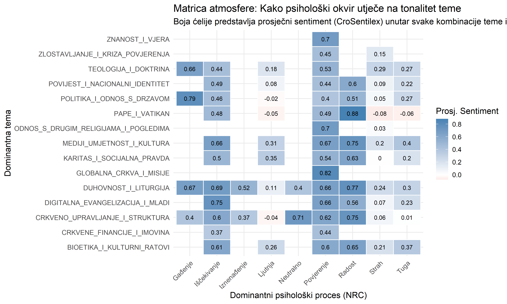
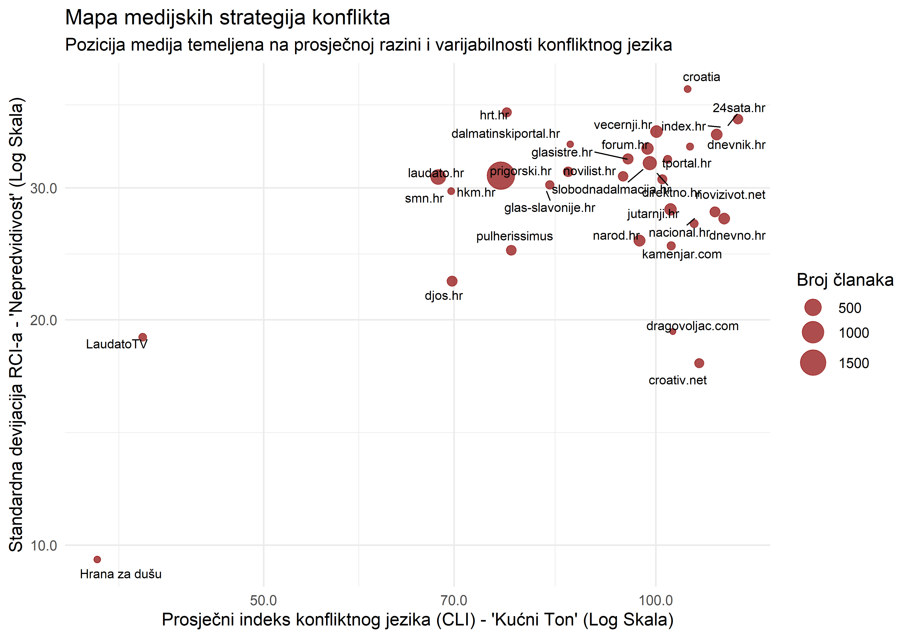
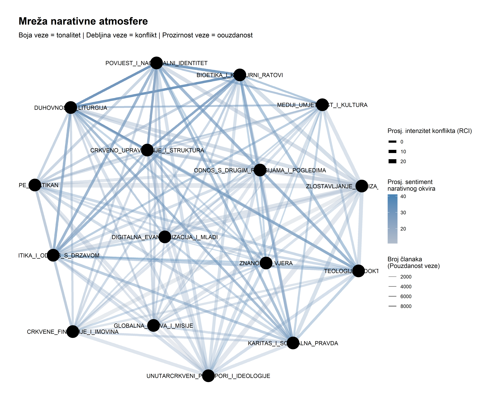

Nakon što smo mapirali tko govori i o čemu, ova treća faza analize bavi se najsuptilnijim, ali možda i najvažnijim pitanjem: kakva je atmosfera digitalnog diskursa? Zanima nas kako se o temama govori – s kojim emocionalnim tonom, kojim psihološkim apelima i s kojim intenzitetom konflikta.
Ovaj izvještaj uvodi inovativne, kontekstualno svjesne metrike za mjerenje atmosfere, odmičući se od jednostavnih kategorija prema dubinskom razumijevanju komunikacijskih strategija. Naš pristup sastoji se od tri koraka: 1. Dvoslojna Emocionalna Analiza: Razdvajamo površinski tonalitet od dubinskih psiholoških procesa. 2. Relativni Indeks Konflikta (RCI): Mjerimo “neočekivanu” agresivnost jezika. 3. Mapa Narativne Atmosfere: Vizualiziramo kako se atmosfera mijenja kada se teme spoje.
Da bismo razumjeli atmosferu, moramo razlikovati dvije stvari: je li tekst napisan u pozitivnom/negativnom tonu (tonalitet) i kojim se psihološkim apelima (strah, nada, povjerenje) služi da bi prenio poruku.
Sljedeća vizualizacija prikazuje kako se tonalitet (boja ćelije) mijenja ovisno o dominantnom psihološkom procesu (stupci) unutar svake teme (redovi). Plave ćelije označavaju pozitivan tonalitet, a crvene negativan, dok desni stupac prikazuje ukupni prosječni sentiment svake teme.
Ova matrica otkriva sofisticirane strategije medijskog uokvirivanja i donosi nekoliko ključnih uvida:
PAPE_I_VATIKAN i
POLITIKA_I_ODNOS_S_DRZAVOM pokazuju
najveći raspon sentimenata – od izrazito negativnih do izrazito
pozitivnih. To ih identificira kao ključna “bojna polja” narativa, gdje
je izbor emocionalnog okvira presudan za oblikovanje percepcije
publike.POLITIKE (vjerojatno na korupciju ili nemoral), stvara
izrazito pozitivan sentiment (+0.79), signalizirajući
moralnu osudu. Međutim, kada je usmjerena na PAPE_I_VATIKAN
(vjerojatno na unutarcrkvene probleme), stvara najnegativniji sentiment
u cijeloj matrici (-0.22).Ukratko, ova analiza pokazuje da mediji ne prenose samo informacije, već aktivno upravljaju atmosferom oko pojedine teme strateškim odabirom emocionalnog ključa u kojem je predstavljaju.

Standardna mjerenja ne uzimaju u obzir kontekst. Nije isto koristiti konfliktan jezik u članku o ratu i u članku o duhovnosti. Relativni indeks konflikta (RCI) mjeri koliko je neki članak neočekivano agresivniji ili pomirljiviji od onoga što je uobičajeno za njegov medij i njegovu temu.
Standardna mjerenja ne uzimaju u obzir kontekst. Nije isto koristiti konfliktan jezik u članku o ratu i u članku o duhovnosti. Relativni indeks konflikta (RCI) mjeri koliko je neki članak neočekivano agresivniji ili pomirljiviji od onoga što je uobičajeno za njegov medij i njegovu temu.
Sljedeći grafikon koristi tu mjeru kako bi mapirao medije na temelju
njihove strategije korištenja konfliktnog jezika. *
X-os: Prosječna, “kućna” razina konfliktnog jezika
medija (CLI). Što je medij više desno, to je njegov ton u
prosjeku agresivniji. * Y-os: Varijabilnost
(RCI) u korištenju konfliktnog jezika. Što je medij više na
grafikonu, to je njegov ton nepredvidljiviji – ponekad je miran, a
ponekad izrazito agresivan. * Veličina Točke: Ukupna
prisutnost medija u diskursu.
Ova mapa otkriva četiri fundamentalno različita modela komunikacije u hrvatskom digitalnom prostoru:
index.hr, 24sata.hr,
dnevnik.hr). Karakterizira ih visok prosječni konflikt i
visoka nepredvidivost. Njihova strategija je doziranje
konflikta: koriste ga snažno kada žele privući pažnju na
“veliku priču”, ali su u drugim situacijama umjereniji.narod.hr, dnevno.hr,
dragovoljac.com). Njihov ton je konstantno visok u
konfliktnosti, ali predvidiv. Oni ne “biraju bitke” – njihova je
uređivačka politika inherentno konfliktna i kritička.vecernji.hr, slobodnadalmacija.hr,
hrt.hr). Njihov prosječni ton je umjereniji, ali visoka
nepredvidivost pokazuje da zadržavaju sposobnost snažne eskalacije
konflikta kada procijene da je to potrebno.hkm.hr, laudato.hr, LaudatoTV).
Njihova strategija je dijametralno suprotna ostalima: dosljedno nizak i
predvidiv ton konflikta, s fokusom na informiranje i izgradnju
zajednice, a ne na stvaranje prijepora.
Konačno, spajamo sve u jednu vizualizaciju. Mreža povezanosti tema prikazuje kako se teme spajaju u šire narativne okvire. Izgled svake veze otkriva atmosferu tih spojeva:
Ova mreža otkriva duboku, temeljnu strukturu hrvatskog katoličkog digitalnog prostora:
Dva “Narativna svemira”: Mreža nije kaotična; vidljiva je jasna podjela.
POLITIKE,
POVIJESTI, BIOETIKE, i
UNUTARCRKVENIH PRIJEPORA. Veze između ovih tema su
izrazito debele, što znači da su visoko
konfliktne. Ovo je epicentar svih prijepora i “kulturalnih
ratova”.DUHOVNOSTI,
TEOLOGIJE, i CRKVENOG UPRAVLJANJA. Veze
unutar ovog klastera i prema njemu su znatno
tanje, što ukazuje na puno nižu razinu konflikta. Ovo je svijet
unutarcrkvenih, doktrinalnih i duhovnih rasprava.Konflikt kao ključni diferencijator:
Najiznenađujući nalaz je gotovo potpuno odsustvo negativno obojenih
veza. To ne znači da nema kritike, već da je intenzitet
konflikta (debljina veze) ključni element koji razlikuje
narative. Najdeblje i najtamnije linije – koje predstavljaju
najpouzdanije i najkonfliktnije narativne spojeve – jasno povezuju teme
BIOETIKE, POLITIKE,
PAPE I VATIKANA i POVIJESTI. Ovo je
“četverokut prijepora” gdje se odvijaju najžešće medijske
rasprave.
Uloga “mostova”: Teme poput
CRKVENO UPRAVLJANJE i DIGITALNA EVANGELIZACIJA
pozicionirane su centralno i služe kao mostovi koji povezuju ova dva
svijeta, imajući snažne veze i prema “političkom” i prema “pastoralnom”
klasteru.
Ukratko, ova mreža je vizualni dokaz postojanja dva različita komunikacijska modela: jedan koji funkcionira na “gorivu” visokog konflikta i drugi koji teži mirnom i ne-konfliktnom izričaju. Ključne bitke za javno mnijenje vode se na “mostovima” između ova dva svijeta.

Dubinska analiza atmosfere katoličkog digitalnog prostora u Hrvatskoj otkrila je kompleksnu sliku koja nadilazi jednostavnu podjelu na “pozitivne” i “negativne” teme. Naši nalazi ukazuju na postojanje sofisticiranih komunikacijskih strategija i dubokih strukturnih obrazaca u načinu na koji se o vjeri i Crkvi govori u javnosti.
Tri ključna zaključka se ističu:
Kontekstualno oblikovanje tonaliteta: Dokazali
smo da tonalitet teme nije inherentno svojstvo, već rezultat strateškog
emocionalnog uokvirivanja. Isti sadržaj može biti
predstavljen kao pozitivan ili negativan ovisno o tome služi li se medij
psihološkim apelima na Povjerenje i Radost ili
na Ljutnju i Strah. Ovo potvrđuje da mediji
nisu samo pasivni prenositelji informacija, već aktivni kreatori
atmosfere.
Četiri modela komunikacije: Identificirali smo četiri fundamentalno različite medijske strategije u korištenju konfliktnog jezika, koje grubo odgovaraju tipologiji medija:
Dva “Svemira” diskursa: Najvažniji nalaz, vizualiziran u Mreži Narativne Atmosfere, jest postojanje dva jasno odvojena tematska i atmosferska svijeta. Jedan je društveno-politički, obilježen visokim intenzitetom konflikta i ispreplitanjem tema politike, povijesti i bioetike. Drugi je pastoralno-institucionalni, karakteriziran niskim konfliktom i fokusom na duhovnost i unutarcrkvena pitanja.
Ovi nalazi pokazuju da je za razumijevanje digitalnog prostora nužno koristiti višeslojne, kontekstualno svjesne metode koje mogu razotkriti suptilne komunikacijske strategije koje oblikuju javnu percepciju Crkve i vjere u Hrvatskoj.
Budući koraci ovog istraživanja usmjerit će se na povezivanje ovih nalaza s konkretnim događajima (Event Detection) te na finiju analizu specifičnih narativa i fraza koje se koriste unutar najkonfliktnijih tema. Krajnji cilj ostaje stvaranje dinamičnog “digitalnog opservatorija” koji će u stvarnom vremenu moći pratiti i analizirati puls ovih važnih društvenih rasprava.